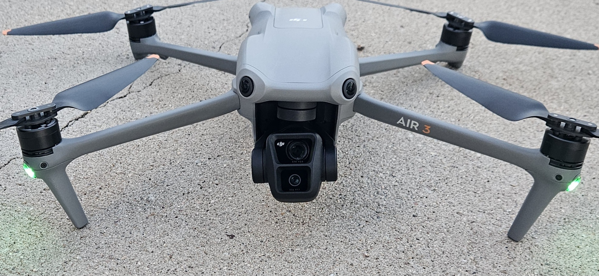
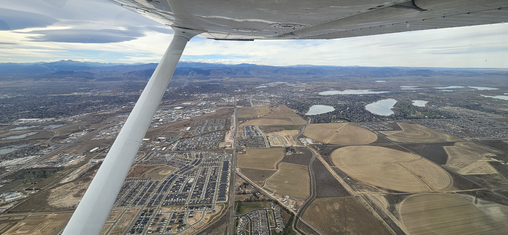

AVIATION
Flying & Aerospace
Aviation has been a long time interest of mine that spans across recreational flying, UAV operations, and aviation technology.
ADS-B Flight Tracking
ADS-B (Automatic Dependent Surveillance-Broadcast) is a technology aircraft use to broadcast their position in real time. My station is built from a dedicated Ubuntu server with an ADS-B receiver that continuously decodes aircraft signals and feeds live data to FlightAware, Flightradar24, and ADS-B Exchange. The system runs around the clock and is monitored using the Graphs1090 interface for signal quality and message rates.
View FlightAware Stats

UAV / Drone Operations
Currently working toward my FAA Part 107 Remote Pilot Certificate, which covers commercial drone operations in the National Airspace System. Part 107 requires knowledge of airspace classifications, weather, regulations, and safe drone operating procedures.

Private Pilot Certificate
Currently working towards my Private Pilot License (PPL). The PPL program covers aircraft systems, flight maneuvers, navigation, weather interpretation, and airspace regulations, all of which is needed to safely operate an aircraft. I love aviation and I am excited to work towards this goal.
